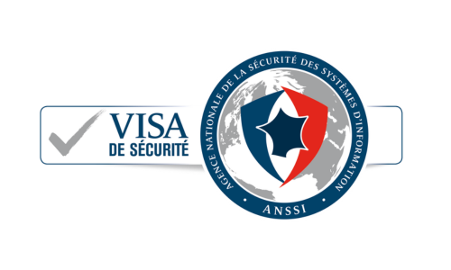
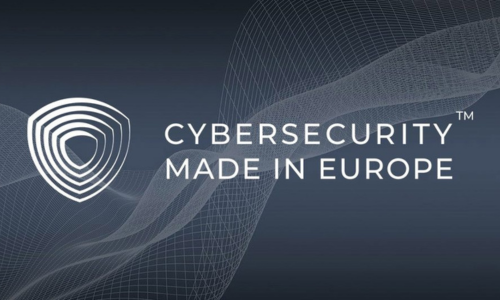
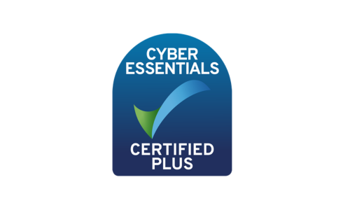
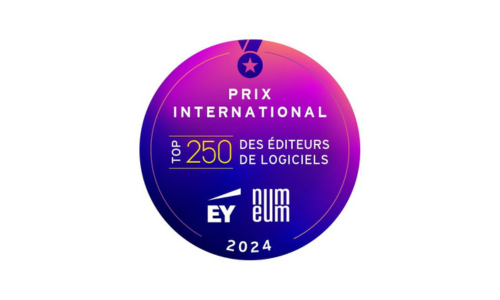

Privora accompagne les TPE et PME dans la protection de leur infrastructure informatique. Nous combinons expertise humaine et technologies de pointe pour vous offrir une sécurité de niveau entreprise, accessible et sans compromis.
Les petites et moyennes entreprises sont devenues la cible privilégiée des cyberattaques, mais elles n'ont pas toujours les moyens de se doter d'un service de sécurité dédié. C'est exactement pour ça que Privora existe.
Nous rendons la cybersécurité professionnelle accessible à toutes les entreprises, quelle que soit leur taille. Notre équipe d'experts surveille, détecte et neutralise les menaces qui pèsent sur votre activité, 24 heures sur 24.
Privora est partenaire officiel de HarfangLab, l'éditeur français de référence en protection des endpoints. Fondée en 2018, HarfangLab protège aujourd'hui des entreprises du CAC 40, des ETI industrielles et des organisations gouvernementales à travers l'Europe. Leur plateforme EDR/EPP est la seule solution européenne certifiée à la fois par l'ANSSI et le BSI allemand.
En tant que partenaire, nous déployons et opérons cette technologie souveraine pour nos clients PME et TPE. Vous bénéficiez ainsi du même niveau de protection que les grandes entreprises, avec un accompagnement de proximité adapté à votre structure.
Les technologies que nous déployons sont reconnues par les plus hautes autorités de cybersécurité en Europe :

Visa de Sécurité ANSSI
Made in Europe
Cyber Essentials Plus
Top 250 EY Numeum 2024HarfangLab est notée 4.9/5 sur Gartner Peer Insights et reconnue dans le rapport Forrester XDR Landscape parmi les meilleurs fournisseurs mondiaux. Des entreprises de tous secteurs — industrie, services, finance, secteur public — font confiance à cette technologie pour protéger leurs infrastructures critiques.
Contrairement aux antivirus traditionnels, notre approche repose sur 6 moteurs de détection complémentaires qui travaillent simultanément pour identifier et bloquer les menaces les plus sophistiquées :
Notre solution EPP assure une protection proactive de chaque poste de travail et serveur de votre infrastructure :
La technologie seule ne suffit pas. Ce qui fait la différence, c'est notre approche humaine et notre engagement auprès de chaque client :